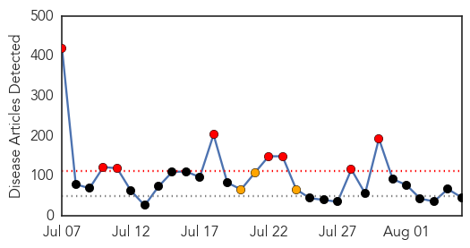
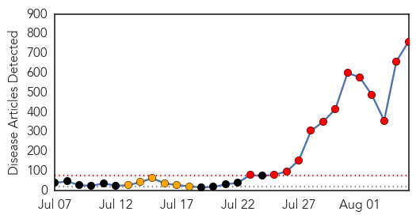
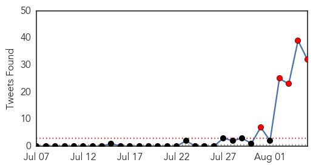

Unknown
30-Day Web Trend
8 alerts, 3 warnings

30-Day Twitter Trend
4 alerts, 0 warnings

Article Locations

Article Confidences
Top Articles:
- 0.984
- Ramadan pilgrimage season in Saudi Arabia mostly free from Mers
- 0.949
- What is Japanese Encephalitis? Know its causes, symptoms and precautions
- 0.944
- Irish hero helps to battle outbreak
- 0.917
- Chicago Tribune
- 0.917
- Chicago Tribune
- 0.917
- Chicago Tribune
- 0.917
- Chicago Tribune
- 0.914
- Herpes virus to blame for Rock River carp kill in WisconsinThe Rock River Times
- 0.904
- Japanese encephalitis virus threat in Asia
- 0.893
- Korea issues warning on Japanese encephalitis
- 0.868
- Encephalitis fears echo in Indian parliament
- 0.866
- Russia calls emergency U.N. Security Council meeting on Ukraine
- 0.866
- One dead, 14 wounded in Afghan training academy attack
- 0.866
- British armed police escort man off Qatar Airways plane at Manchester
- 0.866
- Coalition forces say incident at Kabul military academy, casualties feared
- 0.866
- Tropical storm Bertha forms off the eastern Barbados coast
- 0.796
- Observer
- 0.794
- BMC warns GPs: undergo training in administering TB drugs or lose licence
- 0.791
- DFID steps up support for emergency health and sanitation in Gaza - occupied Palestinian territory
- 0.790
- Second hantavirus-related death in Sask., health officials say
- 0.789
- Baltics and Poland unite to battle African swine fever
- 0.782
- LymeDisease.org Endorses New Evidence-Based Lyme Guidelines: ILADS Guidelines Allow Patients to Understand Treatment Options and Make Informed Choices
- 0.772
- DFID steps up support for emergency health and sanitation in Gaza
- 0.728
- Sickness bug grips Egyptian holiday resort - with some patients on drips
- 0.700
- Msipa’s sneer of Mugabe ironic
- 0.697
- Times Of Swaziland
- 0.697
- Holidaymakers struck down by sickness bug at Egyptian resort
- 0.682
- Jefferson County Health Officials Warn About ‘Rabbit Fever’ « CBS Denver
- 0.677
- African swine fever confirmed on Skaista Country farm :: The Baltic Course
- 0.620
- Thomson say it is safe to travel to resort in Sharm el Sheikh despite illness outbreak
- 0.603
- Call to help ease high volumes at A&E
- 0.602
- Centre's move to bring Rotavirus vaccine has researchers divided
- 0.598
- Toxins in water leads to state of emergency in Ohio
- 0.579
- More than 400,000 in Ohio without drinking water
- 0.567
- Year-round preventive treatment reduces malaria risk in young children
- 0.542
- Free helpline for moms and dads: Talk to a nurse around-the-clock
- 0.527
- Health officials in Calvert County warn of flesh-eating bacteria risk in Chesapeake Bay
- 0.526
- Nashua hospitals do well in measure of health-related infections
- 0.521
- Medical tourism makes Ontario vulnerable to legal challenge, says nursing leader
- 0.519
- Drinking, bathing water ban lifted in Toledo, SE Mich after microcystin, cyanotoxin contamination
- 0.519
- Common tuberculosis vaccine can be used to prevent infection as well as disease
- 0.516
- SGGP English Edition- Medical clinics detected to have wrongdoings
- 0.516
- Between Shifa and Soroka
- 0.515
- Year-round preventive treatment reduces malaria risk in young children
- 0.513
- 'Crowdsourcing' the answer to medical mysteries?
- 0.502
- Alzheimer’s Disease Patients Cannot Be Sued
Top Tweets:
- 0.715
- RT: @RubenCalegari ¡De nada! Eso sí, si en esta época de malaria, conseguís juntar guita, la próxima te contrato de baterist…
- 0.672
- RT: Te atreves a salvar la vida de otros? Cada 45 segundos una persona muere de malaria en Africa, la campaña Nothing... http:/…
- 0.660
- RT: (LosDelSonido) Salud Pública dice que el combate de la malaria avanza en la República Dominicana: SANTO DOMINGO. De lo…
- 0.660
- RT: (LosDelSonido) Salud Pública dice que el combate de la malaria avanza en la República Dominicana: SANTO DOMINGO. De lo…
- 0.654
- RT: Salud Pública dice que el combate de la malaria avanza en la República Dominicana: SANTO DOMINGO. De los 155 municipios de…
- 0.654
- RT: Salud Pública dice que el combate de la malaria avanza en la República Dominicana: SANTO DOMINGO. De los 155 municipios de…
- 0.641
- Bauza: "Nacional no es el Milan de Arrigo Sacchi": Historia. Eso es lo que se juega en la final de la Libertad... http://t.co/g8g8phL8bc
- 0.604
- RT: Un nuevo fármaco elimina en unas 12 horas el parasito en enfermos de Malaria http://t.co/8NwGenT5B7
- 0.594
- RT: Salud Pública dice que el combate de la malaria avanza en la República Dominicana: SANTO DOMINGO. De los 155 municipios del …
- 0.594
- RT: Salud Pública dice que el combate de la malaria avanza en la República Dominicana: SANTO DOMINGO. De los 155 municipios del pa…
- 0.585
- RT: Salud Pública dice que el combate de la malaria avanza en la República Dominicana: SANTO DOMINGO. De los 155 municipios…
- 0.585
- RT: Salud Pública dice que el combate de la malaria avanza en la República Dominicana: SANTO DOMINGO. De los 155 municipios …
- 0.581
- RT: Un hallazgo en el mosquito de la malaria abre la vía a nuevos anticoagulantes http://t.co/krUfVHmOdu
- 0.553
- RT: Alerta sanitaria en El Progreso por brote de malaria radiohrn
- 0.549
- RT: Salud Pública dice que el combate de la malaria avanza en la República Dominicana: SANTO DOMINGO. De los 155 m... http:…
- 0.549
- RT: Salud Pública dice que el combate de la malaria avanza en la República Dominicana: SANTO DOMINGO. De los 155 m... http:…
- 0.549
- RT: Salud Pública dice que el combate de la malaria avanza en la República Dominicana: SANTO DOMINGO. De los 155 m... http:…
- 0.549
- RT: Salud Pública dice que el combate de la malaria avanza en la República Dominicana: SANTO DOMINGO. De los 155 m... http:/…
- 0.549
- RT: Salud Pública dice que el combate de la malaria avanza en la República Dominicana: SANTO DOMINGO. De los 155 m... http://…
- 0.549
- RT: Salud Pública dice que el combate de la malaria avanza en la República Dominicana: SANTO DOMINGO. De los 155 m... http://…
- 0.549
- RT: Salud Pública dice que el combate de la malaria avanza en la República Dominicana: SANTO DOMINGO. De los 155 m... http://t.…
- 0.549
- RT: Salud Pública dice que el combate de la malaria avanza en la República Dominicana: SANTO DOMINGO. De los 155 m... http://t.…
- 0.549
- RT: Salud Pública dice que el combate de la malaria avanza en la República Dominicana: SANTO DOMINGO. De los 155 m... http://t.c…
- 0.538
- RT: Salud Pública dice que el combate de la malaria avanza en la República Dominicana
- 0.538
- RT: Salud Pública dice que el combate de la malaria avanza en la República Dominicana
- 0.538
- RT: MeConTrolaÑuclyAria Salud Pública dice que el combate de la malaria avanza en la República Dominicana: SANTO D... MeC…
- 0.538
- RT: Either flu or malaria Real problem in Africa. all flu like get diagnosed as Malaria because it's so common. @8keith Eb…
- 0.538
- RT: (♥MeLoVeDiaNa♥ Salud Pública dice que el combate de la malaria avanza en la República Dominicana (♥MeLoVeÑuclyArias♥
- 0.525
- de tooo' üò¢ necesito las medallas que nos ofrecimos hace un tiempo atras'
- 0.523
- RT: @pajarofelix no sólo eso: investigación en malaria o fiebre amarilla es insignificante frente a enfermedades metabólicas de so…
- 0.504
- RT: frederick_x5 follow Salud Pública dice que el combate de la malaria avanza en la República Dominicana: SANTO DOMI... fre…
Ebola
30-Day Web Trend
13 alerts, 6 warnings

30-Day Twitter Trend
9 alerts, 0 warnings

Article Locations

Article Confidences
Top Articles:
- 1.000
- The West African Ebola outbreak has the world on alert. Here is a rundown of suspected cases.
- 1.000
- Fear, treatment and a serum: The U.S. and the Ebola outbreak
- 1.000
- More Education Needed to Contain Ebola
- 1.000
- Ebola Infected American Missionary Flown Out of Liberia
- 1.000
- Foreign Relations Council says Ebola outbreak is ‘out of control’
- 1.000
- Saudi man being tested for Ebola virus after returning from Sierra Leone
- 1.000
- Why There’s No Money in An Ebola Vaccine
- 1.000
- Ebola: Welsh national who returned from West Africa a week ago 'in quarantine' at home
- 1.000
- Q&A: Ebola and flying - africa - world
- 1.000
- BA suspends flights over Ebola outbreak
- 1.000
- Ebola outbreak: Sierra Leone, Liberia deploy troops as death toll reaches 887
- 1.000
- Nigeria admits slow response to Ebola case
- 1.000
- Ebola Infected American Missionary Flown Out of Liberia
- 1.000
- Eight in contact with Ebola traveller now with symptoms
- 1.000
- Experts: More Education Needed to Contain Ebola
- 1.000
- 10 Things You Need To Know To Tell What’s True And What’s False
- 1.000
- KSLA News 12 Shreveport, Louisiana News Weather & Sports
- 1.000
- Ebola Infected American Missionary Flown Out of Liberia
- 1.000
- What we need to contain ebola
- 1.000
- Ebola virus: Person in Wales being monitored following possible exposure to disease
- 1.000
- Homeland Security News Wire
- 1.000
- Gulf Daily News Local News Ebola watch
- 1.000
- Ebola Death Toll Almost 900
- 1.000
- How the Ebola outbreak became deadliest in history
- 1.000
- 5 things to know about the Ebola virus
- 1.000
- Nigeria acknowledges slow response in Ebola case
- 1.000
- Has Ebola spread to Saudi Arabia?
- 1.000
- Has Ebola spread to Saudi Arabia?
- 1.000
- Has Ebola spread to Saudi Arabia?
- 1.000
- Has Ebola reached the UK? Welsh national who returned from West Africa is 'in quarantine'
- 1.000
- Suspected Ebola virus case in Saudi Arabia
- 1.000
- Connecticut Hospitals Have Protocols In Place For Patients Displaying Ebola-Like Symptoms
- 1.000
- The most from the coast
- 1.000
- World Bank sets emergency fund to curb Ebola
- 1.000
- Ebola crisis: World Bank announces $200m emergency fund
- 1.000
- Ebola cited in suspension of 7,200 Haj visas for Africa
- 1.000
- Saudi man being tested for possible Ebola case: MoH
- 1.000
- Ebola outbreak: World Health Organisation urged to allow experimental drugs to treat disease
- 1.000
- Ebola is here: 5 reasons not to panic
- 1.000
- #Ebola Virus: Timeline of an unrelenting epidemic
- 1.000
- American woman infected with Ebola heads back to U.S.
- 1.000
- Close Call: New York Patient “Unlikely” To Have Ebola Virus (DETAILS)
- 1.000
- American woman infected with Ebola arrives in U.S.
- 1.000
- American woman infected with Ebola arrives in U.S.
- 1.000
- Ebola virus disease claims 887 lives in West Africa
- 1.000
- No plans to suspend West Africa flights
- 1.000
- 8 suspected Ebola cases in Nigeria
- 1.000
- Ebola Fast Facts
- 1.000
- Mount Sinai patient who traveled to West Africa tested for Ebola virus
- 1.000
- Health official says Mount Sinai patient who traveled to West Africa likely doesn't have Ebola
Showing top 50 articles...
Top Tweets:
- 0.984
- .@AmeshAA: Case-finding, contract tracing, isolation and public health messaging are the steps needed to control the ebola outbreak.
- 0.976
- RT: They can't even distinguish btw Ebola virus, malaria nd fever.
- 0.974
- RT: L'OMS xifra en 887 els morts per ebola a Àfrica. @ToniTrilla a 8dies: "El brot és molt cridaner però de malària moren …
- 0.911
- RT: @bbcmundo porqué el 1er mundo necesita que disminuya por lo menos en 2/3 la población africana, gracias a la TBC Ebola mal…
- 0.899
- RT: Malaria? No?—>RT: British Airways has suspended flights to Liberia and Sierra Leone because of the Ebola outbreak. Br…
- 0.881
- RT: I have so many mosquito bites. The last thing one needs now with the Ebola outbreak is malaria symptoms.
- 0.873
- RT: Since Ebola outbreak 300,000 have died from malaria, tuberculosis has claimed 600,000 lives. Ebola mig http://t.co/EhJaW…
- 0.861
- RT: Ebola is dangerous - but malaria will not disappear since the virus stays in third world countries lasttweet
- 0.854
- RT: even malaria we'v nt had a vaccine and we talkin abt ebola
- 0.853
- RT: Since Ebola first appeared in 1976, about 2,000 people in total have died from the disease. Measles kills 2,300 a WEEK, Malar…
- 0.808
- RT: Advantage of dealing with Ebola – only contagious when you have symptoms, unlike flu - UPMC physician tells…
- 0.781
- RT: Unlike flu, Ebola is not transmitted by air. If prevention measures are implemented,risk of infection still very low http://t…
- 0.781
- RT: Unlike flu, Ebola is not transmitted by air. If prevention measures are implemented,risk of infection still very low http://t…
- 0.778
- RT: Since the Ebola outbreak in March this year 300.000 people died (+1700 a day) from malaria - so get real people. http://…
- 0.764
- RT: @faineg hoping Ebola won't become pandemic a w/o forgetting TB, Malaria and other preventable diseases
- 0.764
- RT: "Since the Ebola outbreak began in Feb, around 300,000 people have died from malaria, while tuberculosis has claimed ove…
- 0.759
- RT: "Since the Ebola outbreak began in February, around 300,000 people have died from malaria" good read by http://t.co…
- 0.745
- RT: Hundreds of Africans die from an Ebola outbreak, we say there's no cure. Two Americans catch the virus, now there's 'secre…
- 0.744
- RT: Since the Ebola outbreak began, 300,000 people have died from malaria, while TB has claimed over 600,000. http://t.co/gJaxax…
- 0.733
- RT: health Ebola False Alarm at Johns Hopkins: Possible Ebola Case Turned Out to Be Malaria at Johns Hopkins http://t.co/W…
- 0.715
- RT: Concerned about Ebola? You’re worrying about the wrong disease. More people have died of malaria since outbreak began http…
- 0.706
- .@AmeshAA: The 2 infected Americans received monoclonal antibodies. Targets ebola virus specifically, first time it's been used in humans.
- 0.697
- now health care workers are going door to door in W Africa -- to try and stop the ebola epidemic. http://t.co/g9hSLohdA0
- 0.671
- Saudi MoH investigates a suspected Ebola case for a Saudi man has just came from Sierra Leone. http://t.co/GPA5VRRNyw
- 0.666
- RT: How to stop the Ebola outbreak http://t.co/nKJskmdNw1
- 0.646
- RT: "@hajrah_bah: "@Reeddmann: Hehehe am telin you "@hajrah_bah: Ebola virus just made HIV sounds like malaria""yeah"everywhere …
- 0.625
- RT: Ebola False Alarm at Johns Hopkins: Johns Hopkins thought it had an Ebola case, but it turned out to be malaria.
- 0.604
- RT: Like said. Ebola has killed 4,000 people total. Malaria killed 1.2 million in 2010 alone.
- 0.601
- RT: Ebola False Alarm at Johns Hopkins: Johns Hopkins thought it had an Ebola case, but it turned out to be malaria. http:…
- 0.601
- RT: Ebola False Alarm at Johns Hopkins: Johns Hopkins thought it had an Ebola case, but it turned out to be malaria. http://t…
- 0.575
- RT: Ebola"@Iam__teslim: LOl,Fuu"@_OKbye_: Malaria"@Miz_hodeey: "Iam__teslim: Your Zodiac sign? _Anny_PeaceAroundTheWorld"canc…
- 0.572
- RT: Tune in to from 12 - 1PM today as infectious disease expert talks Ebola w/ @mikepintekKDKA http://t.co/…
- 0.544
- RT: Malaria has killed more Nigerians than Ebola in the last one month. The Ebola noise is louder than the Malaria noise. How does …